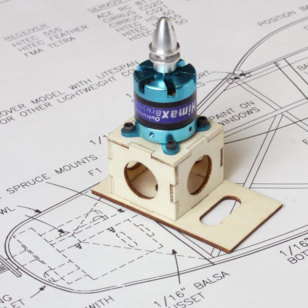
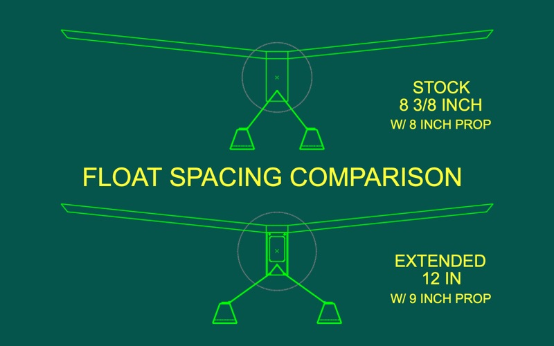

Building Fred Reese's Electric Kitten
 | |||||||||||||||||||||||||
|---|---|---|---|---|---|---|---|---|---|---|---|---|---|---|---|---|---|---|---|---|---|---|---|---|---|
|
Below are a few thoughts on the short kit available through the Flying Models plan service. This document is not intended as a full construction manual. It is simply a collection of informative notes and musings, based on building and flying my model, as well as the Kitten that Carl Hampton brought to the 2018 NEAT Fair. Flying Carl's model pushed the plans onto my building board, and I hope these notes will offer value for your build, so you can fly your Electric Kitten sooner. Note that the smaller images below can be enlarged by clicking. They will open in a new tab, preserving this window. Update, September 2, 2019: I've just added a Materials and Supplies List page, to show what else you will need to complete your Electric Kitten. | |||||||||||||||||||||||||
|
This airframe builds quite quickly. The simple wing has only a few parts, and can be completed in an evening or two. The fuselage is traditional stick and stringer construction to keep the weight down, and takes just a little longer. The bare airframe of my Electric Kitten weighed just 7 ounces with the floats, and the covering, motor and radio gear didn't quite double that number, ensuring a very low wing loading. | |||||||||||||||||||||||||
| The fuselage and tail surfaces are traditional stick and stringer construction, primarily from 1/8-inch square balsa, with a bit of sheet stock here and there. I recommend cutting your own strip wood from sheets to ensure quality and consistency. Cutting your own wood is faster and easier than sorting through the bin of individual sticks at the hobby shop, and a lot less expensive, so you needn't be stingy as you go. | |||||||||||||||||||||||||
|
Use your favorite technique to build two identical sides. You can build the second side over the first to ensure symmetry, or make a quick assembly fixture by pinning scrap balsa blocking over the plan. I usually prefer a steel building board, and use magnetic fixtures as needed to locate the pieces. I also cut an identical second set of uprights and diagonals while assembling the first side. This speeds assembly of the second side, and helps ensure it matches its mate. Take care when joining the sides to keep the fuselage as straight as possible.
The laser cut wood parts are all labeled and should be pretty self explanatory, but please don't hesitate to reach out if you have any questions. One detail worth mentioning is that the ribs, wing tip plates, and fuselage gussets are mirrored. With a little care you can have the part markings facing in the same direction. I oriented the gussets and tip plates with the markings inward, so they would not show through the covering. Building the wing is straight forward, though do notice that the W1 center section ribs end in a point, and so are only supported by the center section sheeting where they meet the trailing edge. I've received some emails wondering whether the wing spars shown on the plans are strong enough. I firmly believe they are. This is a lightly loaded, slow flyer type model, which does not benefit from excessive power or weight. As long as you build and power it as designed, and pay attention when picking your spar stock, it should be fine. Both my model and Carl's have been looped and rolled repeatedly without wing failure. I cut my spars from a single 3x36 inch sheet of firm 1/8-in balsa. I was careful to choose a sheet with straight grain and 10-12 pound density. This care gave me spars without internal stresses, that stayed straight once cut. You may want to cut your spars slightly oversize, leaving room to fine tune them once any internal stresses reveal themselves. A good straight edge and new X-Acto, or single edge razor blade, are more than enough for the job, though take light passes to avoid having the grain pull the blade off line. Another option is to use a table saw. I use and highly recommend the bench-top Byrnes Model Machines table saw for much of my model work, but a full size table saw can work fine with a high tooth count, narrow kerf blade and a zero clearance insert. Naturally, I must admonish you to use all due caution with any power tools. | |||||||||||||||||||||||||
| If you have a decent miter gauge, the dihedral angle is 6 degrees per panel. Trimming the root ends of the spars before you start gluing will make life much easier when you join the panels. I used the Byrnes rip taper gauge to remove the small wedge on the underside of each spar root to accommodate the center section sheeting. This is also a 6 degree cut, though at 90 degrees to the root cross cut. While you have the gauges set up, you might as well cut the balsa spar joiners at the same time. The plans show 1/16 sheet gussets to support the wing tips. Instead, I measured my spars carefully, and just cut the outer ends at 45 degrees. A disk sander can also shape these angles quickly and efficiently. | Do not use this sketch for shaping your spars. | ||||||||||||||||||||||||
| The 1/16 plywood pieces include the control horns and two pieces for the wing attachment as detailed on the plans. One control horn is as drawn on the plans, the second one, closer to the center of the sheet, has a slight jog along its leading edge. My intention is for this to be the rudder horn, so that you can align the pushrod attachment point with the hinge line. The elevator horn is installed "backwards," so the offset is not needed. | |||||||||||||||||||||||||
| My Kitten employs the wing attachment at right, as shown on the plans, while Carl's had a single 4-40 socket head cap screw at the center of the trailing edge to retain the wing. The screw works, though personally I don't want to look for a tool to access the battery connection. Other builders also report using a retaining screw with success, and at least a couple of builders have adapted the windshield to be a removable hatch plate. As always, the choice is yours. | |||||||||||||||||||||||||
|
The firewall F1 is cut from light ply, and marked with a cross locating the thrust line. That and the circle may be helpful as guides when you go to mount your motor. As it is impossible to know each individual power installation, you will need to modify your firewall to suit.
I have also included a mat board template of the original firewall as drawn on the plan. This gives the location of the original beam cutouts for the S400 motor and gearbox, which may be helpful for some, as well as a small hole to indicate the thrust line. The larger hole serves for cooling airflow and ESC access. You will need to get a little creative for your setup, or opt for the optional laser cut motor mount, discussed below. | |||||||||||||||||||||||||
|
Speaking of mat board templates ...
The two long pieces of mat board in your kit make up the float side template. These fit together with fingers as shown, and can be glued with Elmer's or Titebond. There are also two small rectangles, cut from the float side pieces, that are roughly the size of large postage stamps. They are intended to be glued over the template finger area, with one shorter to accommodate the reduced height of the float side behind the step. The line etched across the fingers should remain visible. This denotes the location of F4. The other former locations are also indicated. The black pen markings shown here were handmarked for reference in these images. The kit templates are marked only with the F4 indicator across the fingers. | |||||||||||||||||||||||||
| The remaining three pieces labeled CF1, 2 & 3 make up the cowl assembly form as shown on the plan to aid when sheeting the cowl. CF3 is not actually on the plan, but I've included it to provide bracing while you join CF2 to CF1. These can be secured with Elmer's or Titebond. I suppose you could use CA for this form, though I find Elmers grabs very quickly with mat board, and is much less expensive than CA. | |||||||||||||||||||||||||
|
FLOATS The plan and article do not indicate a preferred grain direction for the float bulkheads. I opted for horizontal to help tie the float sides together. Vertical grain would resist compressive loads more effectively, but the Kitten is light and slow, and it isn't hard to land gently. I try to pick a firmer piece of wood for cutting the bulkheads and cowl cheeks. If the grain direction still makes you nervous, glue a piece of 1/8 sq or 1/16 x 1/4 vertically along the sides of F3 and F4 before assembling the float. I don't think F5 or 6 will need any help, and you shouldn't be touching down as far forward as F2! The bulkheads are etched with a short centerline indicator to help align them to the upper deck. In addition to the laser cut bulkheads, the floats will require at least four more sheets measuring 1/16 x 3 x 36. You can cut both sides for a single float from one sheet, so two of those sheets will go to the float sides. Both upper sheeting pieces can be cut from two feet of a third sheet, while its remainder and a fourth sheet should be enough for the lower sheeting. I choose some 6-7 pound wood for my floats, to help keep the weight down. The actual float side shape is shown on the plans, and it fit my assembly quite accurately. I assembled my floats upside down, using magnets and weights to hold the deck flat against my building board as I added the bulkheads and sides. You will obviously want to remove these before installing the bottom sheeting. I worked forward and aft from the step when sheeting my floats. Doing so saves the trouble of any critical fitting. Just keep adding pieces of stock until you run off the ends. I rough cut oversize pieces for the lower sheeting using a pair of scissors, and did the final shaping with a sanding block after everything was glued up. Take care to keep the lower chines sharp when sanding your floats, to help your Kitten lift off more easily. For those wondering why the kit includes templates for the float sides and not wood parts, the answer is simple economics. Not everyone has ready access to a water flying site, and so it doesn't make sense to increase the price of each kit with more wood that a good percentage of people will not use. The floats require 4 sheets of balsa, so the savings are significant. The template also allows you to hand pick the wood if you do build floats. Just place the template on a sheet of 1/16 balsa and trace around it with your favorite hobby knife. This template is exclusive to the short kit at this time, and is not included when purchasing a plan and template set. The plans do show the float side pattern. Sorry there aren't any photos of building the floats. They are little more than basic balsa boxes, and I knocked them out late one night without a camera handy. I cut the float spines and spreader bars from clear pine with my Byrnes table saw.
FINISHING The lightweight airframe is more than strong enough for flight, and we should strive to avoid adding weight unnecessarily with careless equipment and finishing choices. Full strength plastic films are not recommended. They will add significant weight, and could potentially distort the airframe when shrinking. Fred Reese's prototype was covered with LiteSpan, which I believe is also on Carl's model. The unfortunate Solarfilm situation has made LiteSpan/SoLite/Litefilm tougher to find these days, and with limited color options as remaining stock runs out, but it is still available from some vendors. Do use the lightest covering you can source. LighTex from AirBorne Models is a great choice with 14 opaque options, and 6 transparent. UltraKote ParkLite is about the same weight, with 16 opaque colors, but none transparent. I covered my entire model with Micafilm, secured with SIG Stix-It. I had some remaining Micafilm, it is pretty light, and I like its look. Yes, Micafilm is also a discontinued Solarfilm product. For reference, my bare airframe weighed just shy of 7 ounces before covering, with the floats installed. The covering, servos, pushrods, receiver, motor, and ESC added another 6 1/2 ounces. It now weighs 17.4 ounces flight-ready, when carrying a 2S 2000mAh battery. After a few flights I realized I don't need that large a battery, and now use packs from 700 - 1000 mAh. That has reduced my flying weight to just under a pound, and still gives me over 20 minutes of duration. There is one important trick to remember. Normally we cover the bottom of a boxy structure first to hide the final seams underneath, but that is not best when covering floats. Whenever a float is moving through the water, there is some lateral water flow trying to escape past the float sides. Covering the float sides after the undersurface will leave an edge to catch the water, much like shingles installed upside down on a roof. | Instead cover the float sides first, wrapping the film about 1/4 inch around the chines and onto the bottom sheeting. Now cover the bottom of the floats, and trim the film as neatly as possible, leaving about 1/8-inch to wrap up the sides and rear. Covering the bottom last provides a properly "shingled" seam that sheds the water, and a neatly trimmed edge will not be nearly as objectionable as seeing the covering peeling off your floats. | ||||||||||||||||||||||||
|
POWER & GUIDANCE | |||||||||||||||||||||||||
|
Carl's model is powered with a Himax 2812-0850, APC 8x6E prop, and a 3S 1000-1800mAh lipo battery. This gives just over 100 watts at full power and is a winning combination. Maxx Products also offers the Castle Creations Talon 15, which has more than enough headroom for this application.
I found an unused AXI 2208/34 in my collection, and when paired with an APC 9x6 Slow Fly prop and a 2S 2000mAh lipo battery it gives about the same power as Carl's setup. I initially flew this setup with 3S packs. The Kitten was excessively over-powered, and the motor was over its design limits. Watch the short take off demo in the maiden flight video if you don't believe me. Another suitable power system I can recommend is the Cobra 2208/34, with the same prop and 2S batteries I am using with the AXI. These two motors are effectively identical, even down to their mounting geometry. I am now using 2S batteries in the 700 - 1000mAh range, as my typical current draw is averaging below 19 watts. If you believe that too much power is almost enough, the Kitten might not be your best match. Save the weight, and relish its slow flight capabilities. |  | ||||||||||||||||||||||||
|
Do consider the optional laser cut mount shown above if you will be using one of the motors I've mentioned. It includes a replacement F1 that keys to the laser cut mount assembly, as well as 4-40 mounting hardware, and is available here.
The radio requirements for the Electric Kitten are modest, and a pair of Hitec HS-55 servos and a light receiver are ideal.
My control throws are currently set as noted on this chart. For what it is worth, my transmitter is usually set to high rate rudder and low rate elevator. I do switch both controls to high rates to toss it around a bit, and to low when handing the transmitter off to a new pilot.
| I've had a couple emails about the elevator pushrod. I read the plans as showing it exiting between the fuselage sides, and minimized the gap with a scrap of balsa.
You can also see my sewn thread hinges in this view. | ||||||||||||||||||||||||
|
MODIFICATIONS As with any build, there is room to accommodate personal preferences, and equipment and materials on hand. I made a couple of changes during my build, ever mindful of adding unnecessary weight or complication. | |||||||||||||||||||||||||
|
My most significant changes involve the landing gear. I don't like covering around landing gear wires, so made a simple pocket for the main gear on the front face of F2. It has a notched 1/16 ply core to match the wire diameter and angle as shown, as is the 1/8 light ply used as the forward face of the pocket.
A single 4-40 socket head cap screw just under the center bend pins the wire in place, and clamps the box a bit when tightened. The original gear lacing holes provided registration guidance for the gear box assembly. A disk on the forward box face captures the T-nut so it doesn't push out, and the cap screw can be accessed through the main cabin. | |||||||||||||||||||||||||
|  | Spreading the struts will also lower the fuselage about 5/8 of an inch. To compensate for this, I lengthened my struts about an inch between the fuselage and floats to maintain the original thrust line height above the float decks. I have logged a bit more than seven hours with the Kitten during the 2019 flying season, and no longer feel that lengthening the struts to accommodate the extra spacing is necessary. | |||||||||||||||||||||||
|
Reese used a dowel and rubber bands to secure the rear float strut. I wanted to lock the strut in place so I could brace the struts as shown, and didn't want to worry about preflighting the retaining bands. Instead I used a single 2-56 socket head cap screw that passes through a center tab soldered around the rear strut, and threads into a short section of nylon pushrod stock embedded into the under side of the fuselage.
My cross bracing is .020 wire, with 3/16-inch wide strips of .006 brass shim stock wrapped around the landing gear wire and soldered for the anchor points. The bracing wires are not soldered. Simple U-bends at each end hold them in place, and let me take it all apart if needed. | |||||||||||||||||||||||||
| The other obvious change is the diagonal bracing in the back of the fuselage. It isn't shown on the plans, nor is it necessary, but I like how it looks. | |||||||||||||||||||||||||
| I also used some rare earth magnets to secure the cowl, instead of the tape strips Reese used. The arrows at right indicate two of three magnets embedded in the mount, with mating magnets secured within the cowl.
The tape is much faster, lighter and easier to use. Having now been through installing the magnets, I would likely just tack the cowl in place with medium CA. | |||||||||||||||||||||||||
| That should just about cover everything up to your first flight. Please let me know if you have any questions or comments on what works and what doesn't. Such feedback is critical to improving this and future offerings. | |||||||||||||||||||||||||
|
IN THE AIR Most of my flying with the Kitten has been a series of circuits around the pattern, searching for that perfect "pitter-patter" return to the water. Such flying averages just over 2 amps, and I typically change the packs somewhere between 30 and 45 minutes, just to ensure I don't get stranded off shore. Given those numbers, I plan to try out some much lighter batteries as well, and should be able to take another two ounces off the flying weight. | |||||||||||||||||||||||||
| The only discernible difference I've found between Carl's model and mine, without flying them side by side, is that my model seems to slow down a bit better. The larger prop offers about 26 percent more disk area, and thus provides more braking action with the power off. Some of that effect may also be due to a slightly lower flying weight. | |||||||||||||||||||||||||
| In case you missed the mention on the last page, I've since flown Carl's model again, this time on wheels. It remains a delight, and is a perfect option for the neighborhood school yard or empty lot at sunset. | |||||||||||||||||||||||||
| For those intrigued, the plans are available from the Flying Models plans service, as are laser cut short kits, templates and the February 2001 back issue of Flying Models featuring the original construction article. | |||||||||||||||||||||||||
| The Electric Kitten makes a great quick build between more complex projects, will not break the bank, and is most enjoyable to fly. Give it a try, and remind yourself why so many say "Fly Light, Fly Right!" | |||||||||||||||||||||||||

| |||||||||||||||||||||||||
|
So, what do I need to build the short kit? Click to visit the Materials and Supplies List page.
| |||||||||||||||||||||||||
Return to my Kitten page, or the Flying Models Plans site.
Copyright 2022, Thayer Syme. All rights reserved